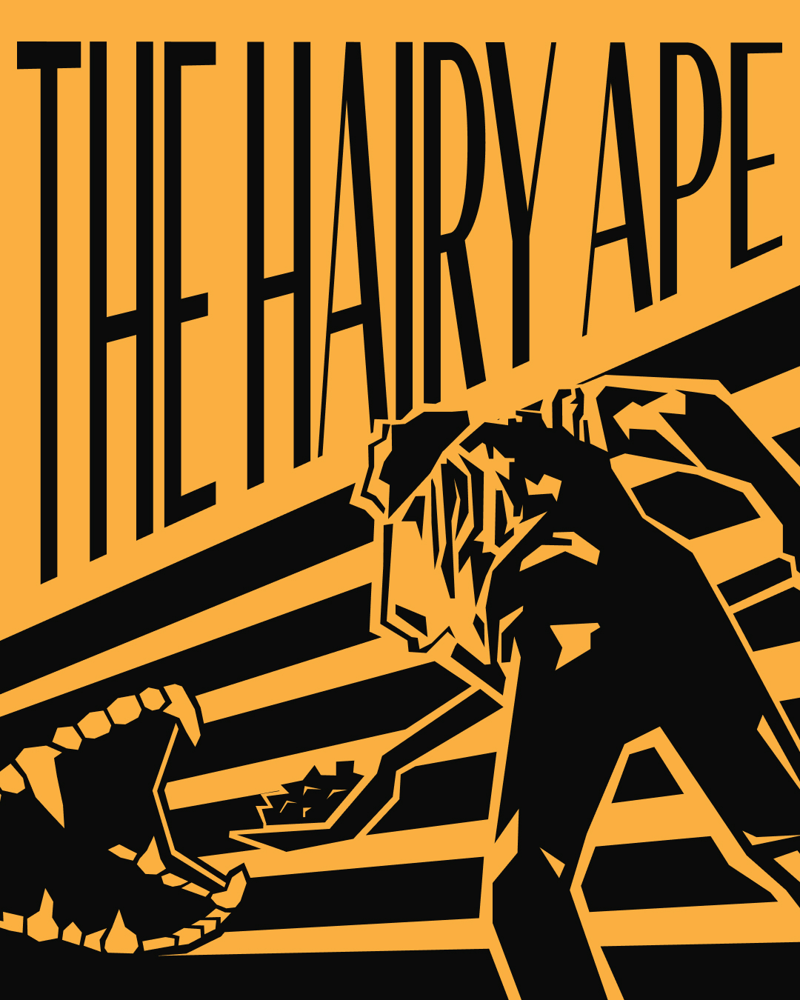
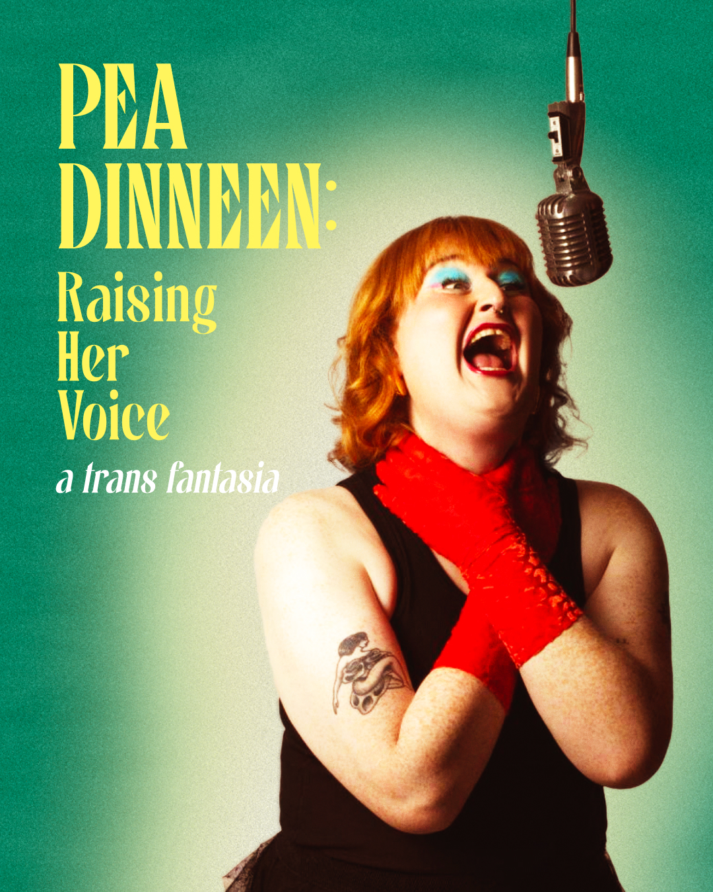
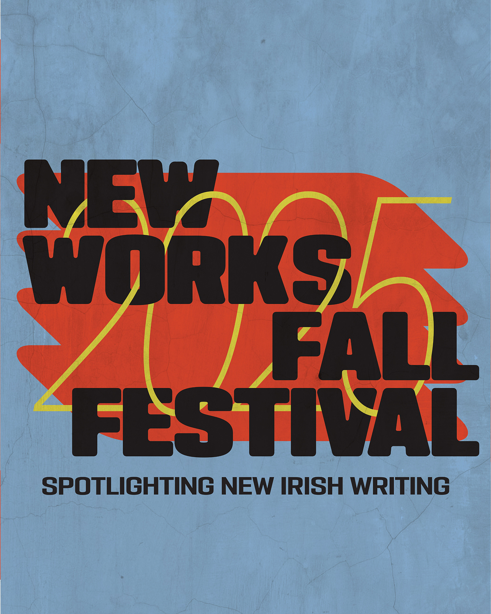

IRISH REPERTORY
THEATRE
THEATRE
Key art and campaign materials for Irish Repertory Theatre, developing visual identities for productions and programs across the season. This selection includes work for the New Works Fall Festival, The Hairy Ape, and Pea Dinneen: Raising Her Voice, as well as Ulster American, starring Max Baker, Matthew Broderick, and Geraldine Hughes, which traveled to Dublin for a run at the Abbey Theatre, Ireland’s National Theatre in August 2026.


